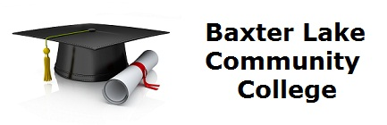

The faculty are dedicated to creating a learning environment that fosters academic achievement and mutual respect for the rights, ideas, and opinions of others. These are the primary methodologies employed:
We do not presuppose that all students have the same learning styles. Some students learn through memorizing or through explanation or demonstration; others, by reading and drawing their own conclusions. For example, these are some common learning styles:
Cognizant of the differences in student learning styles and being aware that each student acquires information differently, we take learning differences into account by varying the methods and approaches used. An eclectic teaching methodology must, therefore, prevail – to teach one way is the wrong way. Common principles followed here include:
| Date | Activity or Event |
|---|---|
| Labor Day | No classes |
| Week after Labor Day | Orientation |
| Thanksgiving | No classes |
| First week in December | Last week of classes |
| Second week in December | Final Exams |
Faculty make every effort to provide time for discussion of class problems. By discussing common problems with the students before the lesson begins, students see that others make errors and that making errors should not lead to a lessening of self-esteem.
Faculty strive at all times to encourage thinking as opposed to memorization. Memorization is required only when necessary. Instead, students are taught cognitive problem solving. When these students enter the business workforce, they will be required to exhibit creativity, to show the ability to solve problems, and to demonstrate sound decision making. Because of these impending job requirements, students must learn how to extrapolate what has been learned in the classroom so that they can apply their current learning to new situations. Students learn not to be teacher-dependent for the right answers because they can apply a transfer of existing learning that will give them the 'knowledge tools' for solving future problems.
Faculty are generous with deserved praise for a job well done; as a result, students get a sense of achievement, belonging, and a feeling of satisfaction.
If the answer is yes, please contact our Admissions Office.
Admissions OfficeVisit the National Education Association Web site.
National Education Association Website